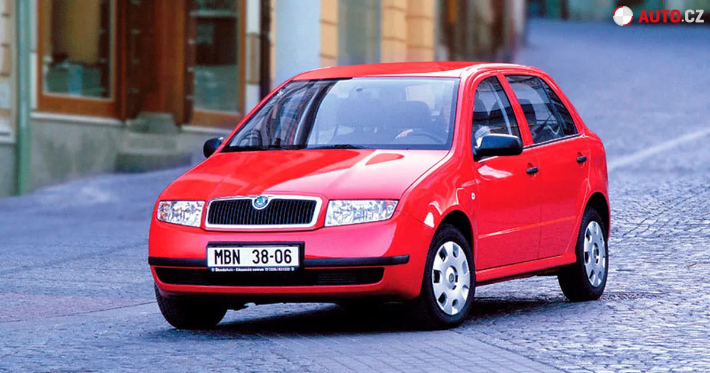

Škoda Fabia je malé městské auto vyráběné od roku 1999. Díky nízkým provozním nákladům, jednoduché konstrukci a dobré dostupnosti dílů je velmi oblíbená jako první auto pro začínající řidiče.
Fabia je ideální jako první auto hlavně díky jednoduchosti a nízkým nákladům. Na rozdíl od větších aut není tak pohodlná na dlouhé cesty, ale do města a na kratší trasy je velmi praktická.